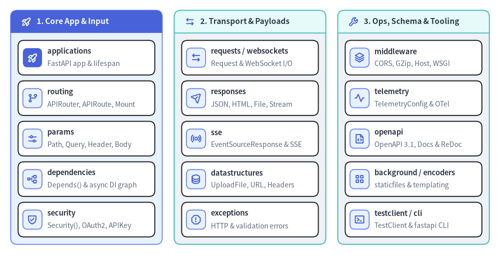

FastAPI Package Overview
FastAPI v0.162.2 is a high-performance ASGI web framework for building HTTP, Server-Sent Events (SSE), and WebSocket APIs in Python using standard type annotations, Pydantic v2 data validation, Starlette routing primitives, and automatic OpenAPI 3.1.0 schema generation.

Top-Level Package Re-exports (fastapi)#
Importing directly from fastapi (fastapi/__init__.py) exposes the primary application entrypoints, parameter functions, dependency markers, transport objects, and status constants:
| Category | Top-Level Symbols (from fastapi import ...) |
Origin Submodule |
|---|---|---|
| Application & Routing | FastAPI, APIRouter |
fastapi.applications, fastapi.routing |
| Parameter Descriptors | Path, Query, Header, Cookie, Body, Form, File |
fastapi.param_functions |
| Dependency & Security | Depends, Security |
fastapi.param_functions |
| Transport & Streaming | Request, Response, WebSocket, WebSocketDisconnect |
fastapi.requests, fastapi.responses, fastapi.websockets |
| Files & Background | UploadFile, BackgroundTasks |
fastapi.datastructures, fastapi.background |
| Errors & Status Codes | HTTPException, WebSocketException, status, __version__ |
fastapi.exceptions, starlette.status, fastapi |
Complete API & CLI Reference Directory (16 Pages)#
Every public class, function, constant, type alias, and CLI command in FastAPI v0.162.2 is organized into 16 module reference pages:
| Page | Module / Scope | Primary Symbols & Contents |
|---|---|---|
| 00. FastAPI Package Overview | fastapi, fastapi.status, fastapi.types |
__version__, HTTP & WebSocket status constants, DecoratedCallable, IncEx |
| 01. fastapi.applications | fastapi.applications |
FastAPI, HTTP/WS decorators, include_router(), mount(), frontend(), middleware, openapi() |
| 02. fastapi.routing | fastapi.routing |
APIRouter, APIRoute, APIRoute.get_route_handler(), APIWebSocketRoute, Mount |
| 03. fastapi.params | fastapi.param_functions, fastapi.params, annotated_doc |
Path(), Query(), Header(), Cookie(), Body(), Form(), File(), Doc() |
| 04. fastapi.dependencies | fastapi.param_functions, fastapi.dependencies |
Depends(), Dependant, async/generator dependency resolution, dependency_overrides |
| 05. fastapi.security | fastapi.security |
Security(), SecurityScopes, OAuth2 flows, APIKey*, HTTPBearer, HTTPBasic, OpenIdConnect |
| 06. fastapi.requests & websockets | fastapi.requests, fastapi.websockets |
Request, HTTPConnection, WebSocket, WebSocketDisconnect, WebSocketState |
| 07. fastapi.responses | fastapi.responses |
Response, JSONResponse, HTMLResponse, RedirectResponse, StreamingResponse, FileResponse, ORJSONResponse |
| 08. fastapi.sse | fastapi.sse |
EventSourceResponse, ServerSentEvent, format_sse_event() |
| 09. fastapi.datastructures | fastapi.datastructures |
UploadFile, URL, Address, Headers, QueryParams, FormData, State, Default() |
| 10. fastapi.exceptions | fastapi.exceptions, fastapi.exception_handlers |
HTTPException, WebSocketException, RequestValidationError, ResponseValidationError |
| 11. fastapi.middleware | fastapi.middleware.* |
CORSMiddleware, GZipMiddleware, HTTPSRedirectMiddleware, TrustedHostMiddleware, WSGIMiddleware |
| 12. fastapi.telemetry | fastapi.telemetry |
TelemetryConfig and native OpenTelemetry tracing, metrics, and log correlation |
| 13. fastapi.openapi | fastapi.openapi.* |
get_openapi(), OpenAPI 3.1.0 schema models, Swagger UI & ReDoc HTML generators |
| 14. Utilities | background, encoders, concurrency, staticfiles, templating, utils |
BackgroundTasks, jsonable_encoder(), run_in_threadpool(), StaticFiles, Jinja2Templates |
| 15. Testing & CLI | fastapi.testclient, fastapi.cli |
TestClient, fastapi dev, fastapi run |
constfastapi.__version__#
Semantic version string (PEP 440 / PEP 396) identifying the installed FastAPI release. Useful for diagnostic health endpoints, structured telemetry metadata, and runtime compatibility assertions.
from fastapi import __version__
__version__: str = "0.162.2"
Attributes#
| Constant | Type | Value | Description |
|---|---|---|---|
fastapi.__version__ |
str |
"0.162.2" |
Installed FastAPI package version string exposed at package root. |
Example#
from fastapi import FastAPI, __version__
app = FastAPI(title="Inventory API", version=__version__)
@app.get("/healthz")
def healthz() -> dict[str, str]:
return {"status": "ok", "framework_version": __version__}
modulefastapi.status#
Re-export of starlette.status providing readable integer constants for IANA HTTP status codes (RFC 9110) and WebSocket close frame codes (RFC 6455). Pass these constants to status_code= on path operation decorators, Response constructors, HTTPException, or WebSocketException for autocomplete-friendly status declarations.
from fastapi import status
status.HTTP_200_OK: int = 200
status.HTTP_201_CREATED: int = 201
status.HTTP_204_NO_CONTENT: int = 204
status.HTTP_422_UNPROCESSABLE_CONTENT: int = 422
status.WS_1000_NORMAL_CLOSURE: int = 1000
status.WS_1008_POLICY_VIOLATION: int = 1008
HTTP Status Constants (100–511)#
| Constant | Value | Category & Typical API Usage |
|---|---|---|
HTTP_100_CONTINUE .. HTTP_103_EARLY_HINTS |
100–103 |
Informational (101 Switching Protocols for WebSocket upgrades, 103 Early Hints). |
HTTP_200_OK |
200 |
Default success status for GET, POST, PUT, PATCH, and DELETE operations. |
HTTP_201_CREATED |
201 |
Resource created successfully (commonly paired with POST collection endpoints). |
HTTP_202_ACCEPTED |
202 |
Request accepted for asynchronous background processing (BackgroundTasks / queues). |
HTTP_204_NO_CONTENT |
204 |
Successful mutation or deletion returning an empty response body. |
HTTP_206_PARTIAL_CONTENT |
206 |
Byte-range media response (Range header on FileResponse / streaming). |
HTTP_301_MOVED_PERMANENTLY / HTTP_302_FOUND |
301 / 302 |
Legacy permanent and temporary URL redirects (may rewrite HTTP method on legacy clients). |
HTTP_303_SEE_OTHER |
303 |
Redirects client to a GET URI after a POST form submission. |
HTTP_304_NOT_MODIFIED |
304 |
Conditional cache hit (ETag / If-None-Match); empty body required. |
HTTP_307_TEMPORARY_REDIRECT / HTTP_308_PERMANENT_REDIRECT |
307 / 308 |
Method-preserving redirects (307 is the default for RedirectResponse and redirect_slashes). |
HTTP_400_BAD_REQUEST |
400 |
Malformed client request syntax or invalid domain command. |
HTTP_401_UNAUTHORIZED |
401 |
Missing or invalid authentication credentials (pair with WWW-Authenticate header). |
HTTP_403_FORBIDDEN |
403 |
Authenticated caller lacks required permissions or OAuth2 scopes. |
HTTP_404_NOT_FOUND |
404 |
Target resource or route path does not exist. |
HTTP_405_METHOD_NOT_ALLOWED |
405 |
Route path exists, but the HTTP verb is not registered on it. |
HTTP_409_CONFLICT |
409 |
Uniqueness constraint violation or optimistic concurrency conflict. |
HTTP_413_CONTENT_TOO_LARGE |
413 |
Request payload exceeds allowed size (replaces deprecated HTTP_413_REQUEST_ENTITY_TOO_LARGE). |
HTTP_414_URI_TOO_LONG |
414 |
Request URI exceeds limit (replaces deprecated HTTP_414_REQUEST_URI_TOO_LONG). |
HTTP_415_UNSUPPORTED_MEDIA_TYPE |
415 |
Unsupported Content-Type header on request payload. |
HTTP_416_RANGE_NOT_SATISFIABLE |
416 |
Invalid byte range (replaces deprecated HTTP_416_REQUESTED_RANGE_NOT_SATISFIABLE). |
HTTP_422_UNPROCESSABLE_CONTENT |
422 |
Default FastAPI RequestValidationError status (replaces deprecated HTTP_422_UNPROCESSABLE_ENTITY). |
HTTP_429_TOO_MANY_REQUESTS |
429 |
Rate limit exceeded (commonly paired with a Retry-After response header). |
HTTP_500_INTERNAL_SERVER_ERROR |
500 |
Unhandled server exception or ResponseValidationError contract failure. |
HTTP_502_BAD_GATEWAY / HTTP_503_SERVICE_UNAVAILABLE / HTTP_504_GATEWAY_TIMEOUT |
502–504 |
Upstream dependency failure, maintenance/readiness shedding, or upstream timeout. |
HTTP_511_NETWORK_AUTHENTICATION_REQUIRED |
511 |
Captive portal / network-level authentication required (5xx range ceiling). |
WebSocket Close Code Constants (1000–1015)#
| Constant | Value | Description |
|---|---|---|
WS_1000_NORMAL_CLOSURE |
1000 |
Clean, normal WebSocket session termination. |
WS_1001_GOING_AWAY |
1001 |
Server shutting down or browser navigating away from page. |
WS_1002_PROTOCOL_ERROR |
1002 |
Endpoint terminating connection due to a WebSocket protocol error. |
WS_1003_UNSUPPORTED_DATA |
1003 |
Received unsupported frame payload type (e.g., binary instead of text). |
WS_1005_NO_STATUS_RCVD / WS_1006_ABNORMAL_CLOSURE |
1005 / 1006 |
Reserved pseudo-codes indicating missing status code or dropped transport. |
WS_1007_INVALID_FRAME_PAYLOAD_DATA |
1007 |
Non-UTF-8 text frame or payload failing schema validation. |
WS_1008_POLICY_VIOLATION |
1008 |
Generic policy or authentication failure (default for WebSocketRequestValidationError). |
WS_1009_MESSAGE_TOO_BIG |
1009 |
Frame payload exceeds maximum permitted message size. |
WS_1010_MANDATORY_EXT |
1010 |
Client expected server to negotiate a required WebSocket extension. |
WS_1011_INTERNAL_ERROR |
1011 |
Unexpected server condition prevented fulfilling the WebSocket session. |
WS_1012_SERVICE_RESTART / WS_1013_TRY_AGAIN_LATER |
1012 / 1013 |
Server restarting or temporarily overloaded (client may reconnect with backoff). |
WS_1014_BAD_GATEWAY / WS_1015_TLS_HANDSHAKE |
1014 / 1015 |
Upstream gateway error (1014) or reserved TLS handshake failure (1015). |
Example#
from fastapi import FastAPI, HTTPException, status
app = FastAPI()
ITEMS: dict[int, str] = {1: "Keyboard"}
@app.post("/items/{item_id}", status_code=status.HTTP_201_CREATED)
def create_item(item_id: int, name: str) -> dict[str, int | str]:
if item_id in ITEMS:
raise HTTPException(
status_code=status.HTTP_409_CONFLICT,
detail="Item already exists",
)
ITEMS[item_id] = name
return {"id": item_id, "name": name}
typefastapi.types.DecoratedCallable#
Bounded TypeVar used as the return annotation across FastAPI route, WebSocket, middleware, and exception-handler decorators so decorated functions preserve their exact parameter and return type signatures for static type checkers (mypy, pyright, ty).
from collections.abc import Callable
from typing import Any, TypeVar
from fastapi.types import DecoratedCallable
DecoratedCallable = TypeVar("DecoratedCallable", bound=Callable[..., Any])
Type Details#
| Symbol | Definition | Purpose |
|---|---|---|
DecoratedCallable |
TypeVar("DecoratedCallable", bound=Callable[..., Any]) |
Preserves endpoint callable signatures across @app.get(), @router.post(), @app.websocket(), @app.middleware(), and @app.exception_handler(). |
ModelNameMap |
dict[type[BaseModel] | type[Enum], str] |
Companion alias in fastapi.types mapping Pydantic models and enums to OpenAPI component names. |
DependencyCacheKey |
tuple[Callable[..., Any] | None, tuple[str, ...], str] |
Companion alias in fastapi.types keying request/function-scoped dependency cache entries. |
Example#
from collections.abc import Callable
from fastapi import APIRouter
from fastapi.types import DecoratedCallable
def public_get(router: APIRouter, path: str) -> Callable[[DecoratedCallable], DecoratedCallable]:
return router.get(path, tags=["public"])
typefastapi.types.IncEx#
Recursive type alias (re-exported from pydantic.main.IncEx) accepted by response_model_include and response_model_exclude on path operation decorators, add_api_route(), and APIRoute to filter serialized fields at the top level (set) or arbitrarily nested model paths (dict).
from collections.abc import Mapping
from fastapi.types import IncEx
type IncEx = (
set[int]
| set[str]
| Mapping[int, IncEx | bool]
| Mapping[str, IncEx | bool]
)
Accepted Shapes#
| Shape | Example Value | Serialization Effect |
|---|---|---|
set[str] |
{"id", "username"} |
Includes or excludes named top-level fields on a Pydantic model or dict. |
set[int] |
{0, 1} |
Includes or excludes specific sequence indices when serializing a list or tuple. |
Mapping[str, IncEx | bool] |
{"profile": {"email": True}} |
Traverses nested sub-models and dicts to selectively include or exclude leaf attributes. |
Mapping[int, IncEx | bool] |
{"__all__": {"secret_hash"}} / {0: {"name": True}} |
Applies nested field rules to specific list elements or collection items. |
Example#
from fastapi import FastAPI
from fastapi.types import IncEx
from pydantic import BaseModel
app = FastAPI()
class UserOut(BaseModel):
id: int
username: str
internal_notes: str = ""
PUBLIC_FIELDS: IncEx = {"id", "username"}
@app.get("/users/me", response_model=UserOut, response_model_include=PUBLIC_FIELDS)
def get_me() -> UserOut:
return UserOut(id=1, username="alice", internal_notes="vip-tier")